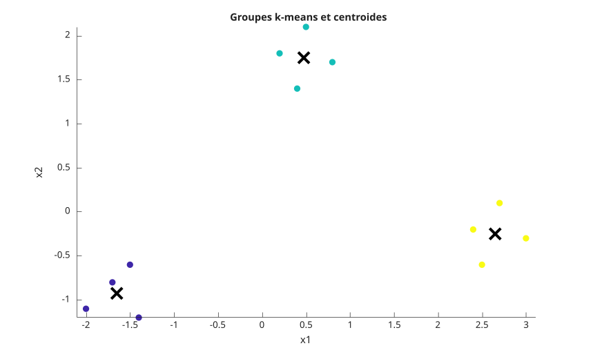
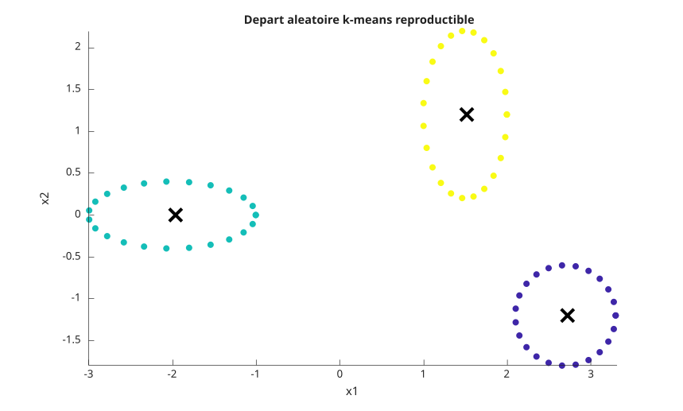
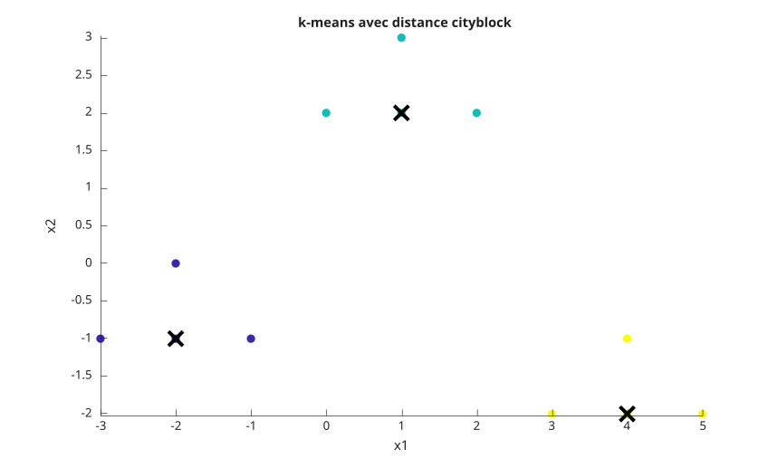

idx = kmeans(X, k)
idx = kmeans(X, k, 'Distance', distance)
idx = kmeans(X, k, 'Start', start)
[idx, C, sumd, D] = kmeans(...)
| Paramètre | Description |
|---|---|
| X | matrice numerique reelle pleine. Les lignes sont les observations et les colonnes sont les variables. |
| k | entier positif indiquant le nombre de groupes. Utiliser [] uniquement lorsque Start est un tableau numerique. |
| distance | nom de distance : 'sqeuclidean', 'squaredeuclidean', 'cityblock', 'cosine', 'correlation' ou 'hamming'. |
| start | choix des centroides initiaux : 'plus', 'sample', 'uniform', 'cluster', une matrice k-par-p ou un tableau k-par-p-par-r. |
| Paramètre | Description |
|---|---|
| idx | vecteur colonne double des indices de groupe. |
| C | matrice k-par-p des centroides. |
| sumd | vecteur k-par-1 des sommes des distances intra-groupe. |
| D | matrice n-par-k des distances entre chaque observation et chaque centroide. |
kmeans partitionne les observations en k groupes en affectant iterativement chaque observation au centroide le plus proche puis en recalculant les centroides.
Les initialisations aleatoires utilisent le generateur global de Nelson. Utiliser rng avant kmeans, ou transmettre Options cree avec statset et un RandStream dans Streams, pour obtenir une initialisation reproductible.
X = [0 0; 0 1; 5 5; 5 6];
[idx, C] = kmeans(X, 2, 'Start', [0 0; 5 5])f = figure();
X = [-2.0 -1.1;
-1.7 -0.8;
-1.4 -1.2;
-1.5 -0.6;
0.2 1.8;
0.5 2.1;
0.8 1.7;
0.4 1.4;
2.4 -0.2;
2.7 0.1;
3.0 -0.3;
2.5 -0.6];
start = [-1.7 -0.8; 0.5 2.1; 2.7 0.1];
[idx, C] = kmeans(X, 3, 'Start', start);
scatter(X(:, 1), X(:, 2), 48, idx, 'filled');
hold on;
plot(C(:, 1), C(:, 2), 'kx', 'MarkerSize', 12, 'LineWidth', 3);
axis equal;
title('Groupes k-means et centroides');
xlabel('x1');
ylabel('x2');
f = figure();
rng(4);
t = linspace(0, 2 * pi, 24)';
X1 = [cos(t) - 2, 0.4 * sin(t)];
X2 = [0.5 * cos(t) + 1.5, sin(t) + 1.2];
X3 = [0.6 * cos(t) + 2.7, 0.6 * sin(t) - 1.2];
X = [X1; X2; X3];
[idx, C] = kmeans(X, 3, 'Start', 'plus', 'Replicates', 4);
scatter(X(:, 1), X(:, 2), 36, idx, 'filled');
hold on;
plot(C(:, 1), C(:, 2), 'kx', 'MarkerSize', 12, 'LineWidth', 3);
axis equal;
title('Depart aleatoire k-means reproductible');
xlabel('x1');
ylabel('x2');
f = figure();
X = [-3 -1;
-2 -1;
-2 0;
-1 -1;
0 2;
1 2;
1 3;
2 2;
3 -2;
4 -2;
4 -1;
5 -2];
start = [-2 -1; 1 2; 4 -2];
[idx, C, sumd] = kmeans(X, 3, 'Start', start, 'Distance', 'cityblock');
scatter(X(:, 1), X(:, 2), 48, idx, 'filled');
hold on;
plot(C(:, 1), C(:, 2), 'kx', 'MarkerSize', 12, 'LineWidth', 3);
axis equal;
title('k-means avec distance cityblock');
xlabel('x1');
ylabel('x2');